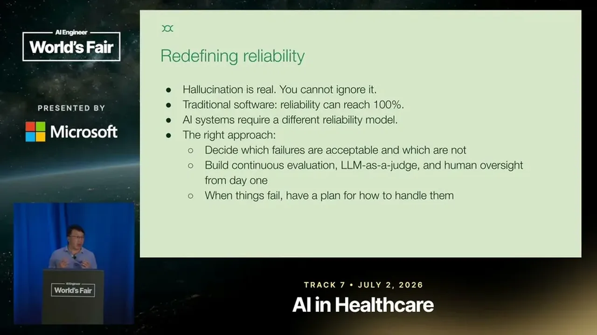

How to build an AI-Native Health Company
Maven Clinic organizes around AI-native leadership expectations, 2-4 week delivery cycles, capped-size PRs with self-identified skip-review, and a tiered failure-tolerance framework and 90% integration-test bar.
If you only read one thing
- Maven treats AI-native adoption as competitive necessity, and leaders are expected to use AI tools directly on their own tasks rather than delegate to other people (c1, c2, c4).
- Delivery cycles compressed to 2-4 week sprints instead of quarter-long planning, PRs are capped near 500 lines, and engineers can self-identify PRs simple enough to skip review rather than default to rubber-stamping (c6, c7, c10).
- Hallucination is treated as a permanent cost, not a bug to eliminate: failure tolerance is tiered by cost (a missed appointment reschedule is fine, a reimbursement amount is not), and integration tests must clear a 90% pass rate run repeatedly (c8, c9).
This traces how Maven's leadership mandate, compressed delivery cycles, review changes, and reliability tiering fit together as one operating model; the talk does not specify how formally these pieces are linked end to end (ours).
Why this talk is a blueprint, not a take (ours)
Scope: An engineering and leadership operating model for running a health-tech company (Maven Clinic) on AI-generated code: adoption mandate, a compressed delivery cadence, adjusted code-review norms, and tiered reliability standards.
A named set of process changes for shipping AI-assisted code faster without one blanket reliability bar: shorter planning cycles, a PR-size cap and skip-review option paired with an explicit no-rubber-stamping norm, and a tiered failure-tolerance framework that applies extra scrutiny to higher-stakes errors like reimbursement mistakes. It is presented as a leadership and process stance rather than a specific tool or codebase.
Prerequisites the talk implies:
- Leadership willing to use AI tools directly themselves, not just mandate it for engineers
- An existing integration test suite substantial enough to run hundreds of tests repeatedly and enforce a pass-rate bar
- A way to classify which failure types are higher-stakes (like reimbursement errors) so the tiered tolerance framework has something concrete to tier
What the talk does not say:
- No specifics on how failure tiers are formally assigned or who decides which errors count as high-stakes
- No incident data: how often the 90% integration-test bar catches real problems, or what happens when it's missed
- No team size, headcount, or cost figures for building and maintaining this process
- No detail on how the 500-line PR cap and skip-review flag are enforced or audited over time
- No discussion of regulatory or compliance review specific to health data, despite this being a health company
If you were to replicate one thing first: Before changing review or reliability norms broadly, pick one team and pair a PR-size cap with an explicit no-rubber-stamp rule, then track whether review quality and shipping speed actually both improve before tiering failure tolerance more broadly.
| Component | What it does (from the talk) | Evidence | Slide |
|---|---|---|---|
| AI adoption mandate | Leadership treats AI adoption as mandatory for engineers, framed around the risk that competitors will adopt it regardless | c1 · 01:03 | |
| Leaders using AI directly | Sales and other leaders solve their own tasks with AI directly instead of only pushing adoption down to reports | c4 · 02:08 | |
| Skip delegation | Leaders describe delegating to other people as more overhead and less efficient than using AI themselves | c5 · 05:14 | |
| 2-4 week delivery sprints | Planning horizon compressed to what the team wants to deliver in the next 2-4 weeks, replacing longer planning cycles | c6 · 07:49 | |
| Self-identified skip-review + PR cap | Engineers flag simple PRs to skip full review, paired with a roughly 500-line cap so no PR is too large for meaningful review | c7 · 11:56 | |
| No rubber-stamping norm | Explicit guard against reviewers giving false-confidence approvals on AI-generated code | c10 · 12:28 | |
| Tiered failure tolerance | Different error types get different scrutiny under a tiered tolerance framework, since completely eliminating hallucinations is costly and not always necessary | c8 · 13:29 |  |
| 90% integration test bar | Hundreds of integration tests re-run repeatedly, with a required pass rate around 90% before shipping | c9 · 15:31 |
What AI-native means at Maven
- Dan frames AI adoption as non-optional: even choosing not to adopt it doesn't remove the competitive pressure, since competitors will.
- He reuses a tractor analogy (tractors don't replace farmers, but farmers who can operate the tractor replace the ones who can't) to frame the goal as making everyone in the company capable of operating AI tools, not replacing them.
- Competitors adopt it anyway (c2)
- Farmers who can't operate the tractor get replaced (c3)
- Keeps pace as adoption becomes mandatory (c1)
- Farmers who can operate the tractor replace the ones who can't (c3)
“AI is here and improving every day. I think adopting it is not an optional”
said at 01:03“Even you choose not to, your competitors will do”
said at 01:03“tractors aren't to replace farmers, but the farmers who can operate the tractor will replace the ones who cannot”
said at 01:03Hiring and rewarding for an AI-first team
- Maven's leaders, including sales leadership, now use AI tools to do tasks themselves instead of delegating them to other people.
- Engineers have followed the same pattern: delegating implementation work to someone else now reads as more overhead and less efficient than just using AI to solve the problem directly, which changes what Maven looks for when hiring and what it rewards in performance review.
- More overhead, less efficient (c5)
- Leaders solve tasks themselves, including sales leadership (c4)
- Becomes the pattern hiring and review reward
“A lot of leaders in fact today at the Maven include our sales sale, they use AI tool to solve those task by themselves now instead delegate to other people”
said at 02:08“Delegating to other people means more overheads and less efficient”
said at 05:14Shipping in weeks, not quarters
- Because building with AI is fast and requirements are rarely right the first time anyway, Maven shifted planning focus away from long lead-time specs.
- Teams focus on what they can deliver in the next two to four weeks, treating one-year goals as directional inspiration only rather than a fixed roadmap, and PMs keep fleshing out the next chunk of requirements in parallel.
“What we really need to focus on is what we want to deliver in the next two to four weeks”
said at 07:49Code review at AI-generated volume
- With engineers producing far more code per day using AI coding tools, Maven changed its review process rather than trying to review everything the old way: engineers can self-identify PRs simple enough to merge without review (while still being held accountable), PRs are kept under roughly 500 lines, and large features get split into stacked PRs.
- Dan explicitly warns against 'rubber stamp' approvals that create false confidence without a real review.
- Engineers self-identify PRs simple enough to skip review (c7)
- PRs capped near 500 lines (c7)
- Large features split into stacked PRs
- Rubber-stamp approvals (c10)
- False confidence without a real review (c10)
“each PR shouldn't have more than 500 lines of code because nobody can do a meaningful code review with the ones has like thousands of lines code”
said at 11:56“One thing we really want to avoid is a rubber stamp, we call it”
said at 12:28Reliability is tiered, not absolute
- Dan argues that completely eliminating hallucination is costly and often unnecessary, so Maven tiers its tolerance by the cost of a failure: a scheduling mistake is recoverable, but an incorrect reimbursement amount is not and gets extra safeguards like cross-model agreement checks.
- Maven backs this with hundreds of integration tests run multiple times per case, requiring a consistent 90% pass rate, plus a post-launch review process that spot-checks live conversations against rubrics.
- Missed appointment reschedule
- Recoverable, standard handling
- Incorrect reimbursement amount
- Extra safeguards: cross-model agreement checks
“completely eliminating them is can be very costly. Sometimes is not necessary, either”
said at 13:29“We consistently requires the high pass rate, like for example, 90% for all the time”
said at 15:31Commentary (ours)
The 2-4 week planning horizon and the 500-line PR cap are specific enough to be testable against Maven's own outcomes, but the talk doesn't share defect rates or velocity numbers to back the claim that this produces better outcomes than the quarterly-planning model it replaced (ours).

Underlying detail — every claim, typed and timestamped (10)
| Stance | Claim | t |
|---|---|---|
| asserts | Dan frames AI adoption as mandatory because AI is improving continuously. | 01:03 |
| predicts | Choosing not to adopt AI won't protect a company because competitors will adopt it anyway. | 01:03 |
| asserts | The goal is for everyone to become capable of operating AI tools, echoing the tractor/farmer analogy. | 01:03 |
| asserts | Maven leaders, including sales leadership, now use AI tools to do tasks themselves instead of delegating. | 02:08 |
| asserts | Delegating implementation to another engineer now costs more overhead than just using AI to solve it directly. | 05:14 |
| recommends | Teams should focus planning on what can be delivered in the next two to four weeks rather than long-range specs. | 07:49 |
| recommends | PRs should stay under about 500 lines of code because larger PRs can't be meaningfully reviewed. | 11:56 |
| warns | Completely eliminating hallucination is costly and often not necessary. | 13:29 |
| asserts | Maven requires a consistent 90% pass rate across repeated integration test runs because LLM output varies run to run. | 15:31 |
| warns | Blindly approving PRs without real review creates false confidence and should be avoided. | 12:28 |
Machine-readable copy embedded in this page (script#ontology) and in the corpus ontology.